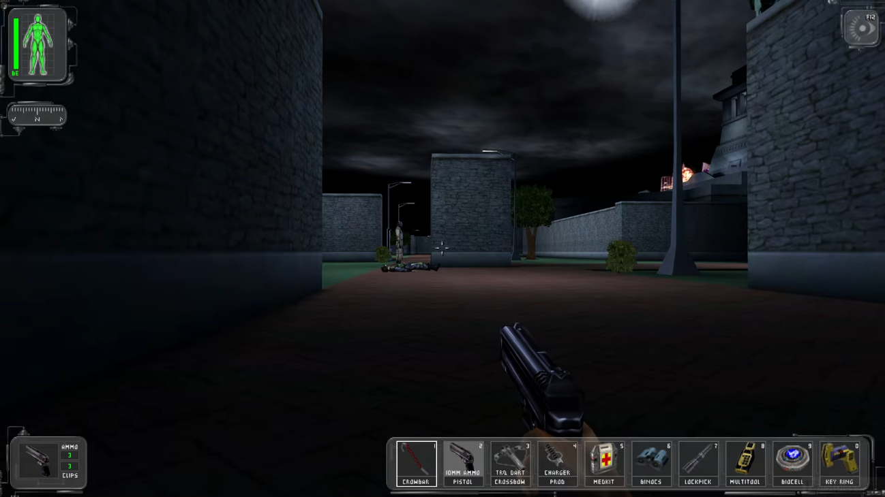

Retro Castle 3D
Showcasing some of the best, most fun and most influential polygonal video games.
PC Gaming in the Early 2000s
The Era of Expansion
As technology advanced, so did the scope of 3D gaming on PC. The early 2000s brought photo-realistic textures, physics engines, and vast open worlds. MMORPGs like World of Warcraft connected millions, while shooters like Half-Life 2 and RPGs like Morrowind redefined storytelling. This was the age where PCs took the lead in delivering high-fidelity, limitless gaming experiences.
Deus Ex
Ion Storm - 2000

Deus Ex is a cyberpunk first-person RPG that blends first-person shooting, stealth, and deep role-playing mechanics in a world of conspiracies, augmented agents, and dystopian intrigue. Set in a near-future plagued by political unrest, technological oppression, and a deadly plague, players take on the role of JC Denton, a nano-augmented agent working for the anti-terrorist organization UNATCO.
As he unravels a tangled web of global conspiracies involving secret societies, shadow governments, and powerful corporations, players are given unprecedented freedom to approach missions in multiple ways—whether through direct combat, hacking, persuasion, or stealth. With its branching dialogue, open-ended level design, and deep moral choices, Deus Ex redefined player agency in gaming and remains a landmark in immersive storytelling and gameplay.